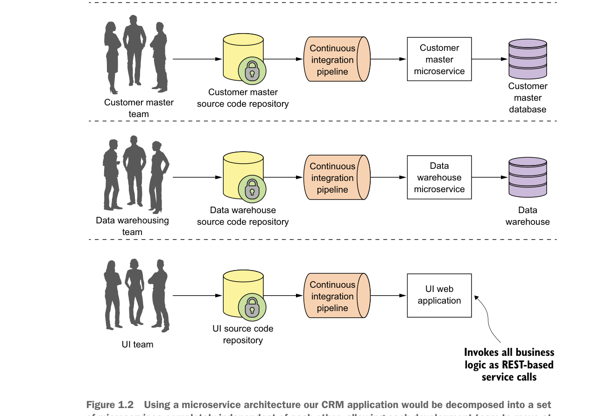

your applications so they’re completely independent of one another. If we take the CRM application we saw in figure 1.1 and decompose it into microservices, it might look like what’s shown in figure 1.2.
Looking at figure 1.2, you can see that each functional team completely owns their service code and service infrastructure. They can build, deploy, and test independently of each other because their code, source control repository, and the infrastructure (app server and database) are now completely independent of the other parts of the application.